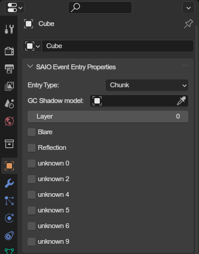

Event Entry Properties Panel🔗︎

In event scenes, this panel is used to set event geometry properties and to define how the model behaves during cutscene playback.
The panel is only available for the top-level parent of a model. Any object with a parent will not be able to use this panel.
The panel can be found in the properties editor, under the object tab, called "SAIO Land Entry Properties".
Entry Type🔗︎
None: Not any event structure. Use this on objects that should not be exported, such as cameras or other workflow objects.Chunk&GC: A model that is rendered and animated.Shadow: A GC Shadow model and lets it be used in the GC Shadow Model property.Particle: A particle object.Reflection Plane: A reflection plane model. The object is expected with only a single quad.
CHUNK & GC Models🔗︎
These two types are exported as actual models in the event. The types export the model corresponding to their name (read more here).
Additionaly, these get extra attributes to set, documented below.
Shadow Model🔗︎
You can set a shadow model to be used for GC shadow casting. MAKE SURE THE ARMATURE IS SET UP IDENTICALLY, as the exact same animation will be applied as to the base model!
Layer🔗︎
This was added in the ports, and is used to adjust the rendering order for transparent models. Increasing the layer makes the model draw later then those at lower layers.

Via the SA2 Cutscene player tool
Blare🔗︎
Marks the model to be used in the blare effect, an unused and unfinished effect similar to motion blur. The name originates from the games debugging texts.
Only 64 models can be marked for blare.
Reflection🔗︎
Marks the model to be visible in reflections.
Enable Lighting🔗︎
Enables lighting(?) on root scene event entries.
Disable Shadow Catching🔗︎
Disables rendering shadows on root scene event entries.
Unknowns🔗︎
These attributes still require extensive research in how they work.
For all we know, Unknown 2 on its own enables lighting.